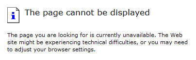
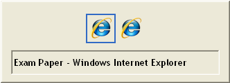
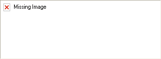

W oknie dialogowym logowania kliknij na przycisk 'Anuluj'. Na kolejnym ekranie przedstawiona bedzie informacja 'Brak dostępu'. Kliknij na widoczny poniżej link: 'Konto tymczasowe'. Poleć studentowi wypełnienie wyświetlonego formularza internetowego a system przydzieli tymczasowe konto i hasło. Zaloguj się i przeprowadź egzamin na tymczasowym koncie.
Jeśli jeden lub dwóch studentów nie widzi arkusza poleć im zalogować się ponownie z zastosowaniem konta tymczasowego wg. procedury przedstawionej powyżej. Jeśli żaden ze studentów w pomieszczeniu egzaminacyjnym nie ma dostepu do arkuszy egzaminacyjnych zadzwoń pod jeden z numerów awaryjnych po wskazówki.
Zrestartuj komputer, zaloguj się ponownie na powyższy adres i kliknij na link 'Restartuj>>' widoczny obok przedstawionego czasu/daty poprzedniej próby. Upewnij kandydata, że jeśli potrzeba otrzyma on dodatkowy czas na koniec egzaminu. Poproś go także aby szybko sprawdził czy jego odpowiedzi na poprzednie pytania zostały prawidłowo zarejestrowane w arkuszu.
Naciśnij Alt+F4 aby zamknąć arkusz; zrealizuj 'Re-start' na niebieskim ekranie; poleć kandydatowi aby sprawdził wszystkie pytania n ekranie który się zawiesił.

Za pomocą klawiszy <ALT> i <TAB> przełącz między otwartymi oknami aż zobaczysz arkusz. Jeśli arkusz nie pojawi się zrealizuj 'Re-start' na niebieskim ekranie.

Przejdź do innego ekranu i powróć aby odświerzyć obrazy. Jeśli wszyscy studenci maja te same problemy, przygotuj notatkę i zgłoś to do biura egzaminacyjnego.

Barwne ostrzeżenie oznacza, że pytanie pozostało nieodpowiedziane (tzn. jest to zaplanowana wskazówka a nie błąd).

Powiedz kandydatom aby kliknęli na przycisk 'Ewakuacja pożarowa' (w każdym narożniku ekranu znajduje sie taka ikonka), zanotuj czas i poinformuj kandydatów, że czas trwania egzaminu zostanie przedłużony odpowiednio do straty. Jeśli pomieszczenie ma być ewakuowane poleć kandydatom aby zapamiętali, przy którym komputerze siedzą w razie gdyby możliwy był powrót i kontynuacja egzaminu.
Przejdź na dół ekranu i kliknij na przycisk 'Kontynuuj'.